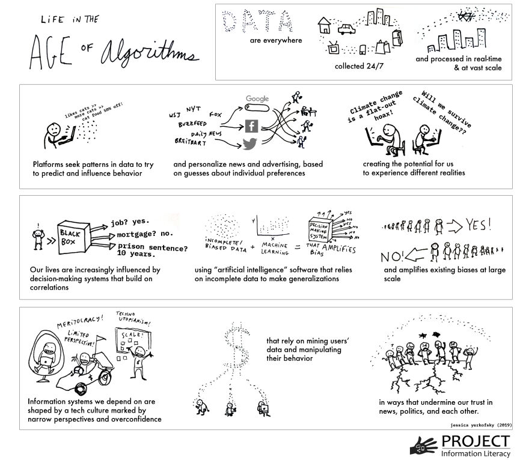
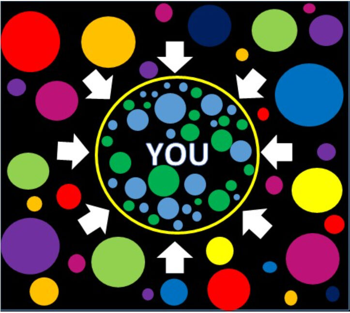
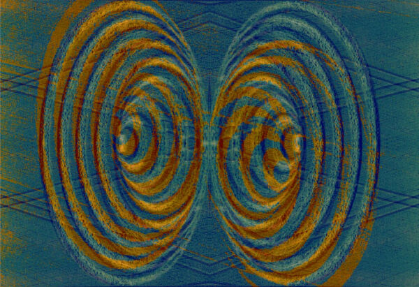

За полазнике
За тренере
За полазнике
За тренере
Модул 6: Доба алгоритама
Опис модула
Главни циљ овог модула је да подигне свест о алгоритмима, о томе како они функционишу и како утичу на људе и друштва, као и које су предности и последице аутоматизованог доношења одлука.
Секундарни циљ је да усмери тренере који желе да користе садржај овог модула за обуку својих полазника.
Уз циљеве, у овом модулу представљено je функционисање алгоритама, њихов могући утицај на људе, друштва и свакодневни живот, зашто je потребно приступити им и користити их опрезно, као и упутства о томе како предавати ову тему.
Полазници који успешно заврше овај модул моћи ће да:
- разумеју шта су алгоритми и како они функционишу
- разумеју како алгоритми утичу на људе и друштва
- разумеју предности и недостаткe алгоритама
- разумеју везу између алгоритама, вести и њузфидова (енг. news feeds)
- разумеју филтриранe балонe (енг. filter bubbles) и ехо-коморe (енг. echo chambers)
Поред тога, тренери који успешно заврше овај модул, моћи ће да разумеју смернице за обрађивање ове теме.
Структура модула
Овај модул се састоји из следећих целина:
- Опис модула (циљеви, опис садржаја и исходи учења)
- Структура модула
- Смернице за полазнике
- Смернице за тренере (како се припремити, методе које треба користити и савети за тренере)
- Садржај (материјал за учење и вежбање)
- Квиз
- Референце (цитирани извори, препоручени извори и видео-записи)
Главни циљеви модула, опис садржаја и исходи учења објашњени су у делу Опис модула. Садржај обухвата све материјале за учење и вежбања везана за садржај. Квиз укључује питања са вишеструким избором и питања на која се одговара са тачно или нетачно како би полазници тестирали свој напредак. Одељак Референце обухвата списак извора цитираних у садржају модула и листу додатних извора и видео-записа који се препоручују за читање и гледање како би се проширило знање о овој теми. Смернице за полазнике укључују упутства и сугестије за полазнике. Смернице за тренере воде тренере кроз различите фазе обуке и дају савете који би могли да буду корисни током предавања предмета.
Смернице за полазнике
Од полазника се очекује да прочитају текст, пажљиво проуче дате примере, погледају препоручене видео-записе и ураде вежбања. Они могу да консултују предложене ресурсе за додатне информације. Након проучавања садржаја, полазницима се препоручује да ураде квиз како би проценили свој напредак. Уколико је потребно, могу поново проучити материјал за учење.
Смернице за тренере
Смернице за тренере укључују сугестије (предлоге) и савете о томе како да користе садржај овог модула за обуку полазника о алгоритмима, потенцијалу који имају да утичу на људе, њихове одлуке и друштва.
Припрема
Припремите презентацију (Пауерпоинт/Прези/Канва) која је обогаћена визуелним материјалима који приказују резултате претраживања различитих људи или са различитих локација. Алтернативно, може се планирати демонстрација у реалном времену.
Почетак
Како бисте увели полазнике у тему, на почетку можете користити кратак квиз (3 до 5 питања) направљен у Кахуту или им поставити питања путем Ментиметар апликације. Поменути квиз и питалице се могу користити као мотивационо средство и средство за проверу постојећег знања полазника о овој теми.
Методологија
Током обуке могу се комбиновати различите наставне методе:
- Предавања
- Дискусије
- Рад у групама
- Самопроцењивање
Савети за тренере
Загревање
Ефикасан начин укључивања полазника и утврђивања заједничких очекивања о томе шта ће научити јесте постављање неколико прелиминарних питања о овој теми. Ово се може урадити кроз групни рад тако што ћете замолити полазнике да дискутују и прикупе идеје, али и индивидуални рад тако што ћете замолити сваког полазника да напише своје идеје на самолепљивим папирићима.
Активност се може спровести на следећи начин:
- Питајте полазнике шта мисле о месту алгоритама у њиховом свакодневном животуe
- Замолите полазнике да класификују дате примере и направе листу места/околности у којима одлуке се доносе према алгоритму
- Питајте полазнике да ли алгоритми имају икакве везе са вестима којима смо изложени
- Питајте полазнике ко пише ове алгоритме и поставља правила/параметре за доношење одлука
Представљање циља лекције
Циљ лекције треба да буде јасан (подизање свести о алгоритмима, њиховом месту у свакодневном животу и њиховом потенцијалу за манипулацију). Након питања за загревање, лакше ћете разјаснити циљеве.
Представљање садржаја лекције
Приликом представљања садржаја водите рачуна о интеракцији са полазницима и подстакните их на активно учешће.
- Пре него што дате дефиницију алгоритма, замолите полазнике да га сами објасне и разраде његове функције.
- Пре него што дате преглед користи и потенцијалних ризика од алгоритама, замолите полазнике да изложе своје виђење.
- Када говорите о различитим резултатима за исту претрагу преко претраживача (за различите људе или локације), поткрепите своју тврдњу сликама екрана или направите демонстрацију у реалном времену.
- Ако вам време и могућности дозвољавају, замолите полазнике да изврше исту претрагу и упореде резултате.
- Јасно истакните везу између алгоритама и вести/њузфидова (енг. news feeds).
- Када дате свеобухватан преглед алгоритама, филтрираних балона и ехо-комора, замолите полазнике да детаљније елаборирају улогу алгоритама у ширењу мисинформација.
Закључак
Направите кратак резиме лекције и поставите неколико питања која ће вам помоћи да истакнете најважније поруке које желите да пренесете.
- Питајте полазнике да ли им то што су свесни постојања алгоритмима помаже да преузму контролу.
Након дискусије, уверите се да полазници разумеју да алгоритми доносе одлуке уместо нас и да постоји простор за манипулацију.
Садржај: Доба алгоритама
Увод
Алгоритам је скуп инструкција и правила које рачунари користе на корпусу података како би решили проблем или извршили задатак (Head, Fister & MacMillan, 2020, стр. 49). Алгоритам се може посматрати као мини упутство за употребу које рачунарима говори како да изврше дати задатак или да манипулишу датим подацима (What is an algorithm?, n.d.).
Алгоритми бирају садржај тако што дају приоритет, класификују, повезују и филтрирају информације. Одређивање приоритета врши рангирање садржаја како би се скренула пажњу на једну ствар, а на рачун друге. Класификација укључује категоризацију одређеног ентитета као саставног дела дате класе, посматрањем било којих карактеристика тог ентитета. Повезивање утврђује односе између ентитета, а филтрирање подразумева укључивање или искључивање одређених информација на основу скупа критеријума (Diakopoulos, 2013, стр. 4-8).
Алгоритми филтрирања често узимају у обзир одлуке о одређивању приоритета, класификацији и повезивању. На пример, у апликацијама за персонализацију вести, вести се филтрирају према томе како су те вести категорисане, како су повезане са интересовањима особе и какав им је приоритет дат код те особе. На основу одлука филтрирања, одређене информације су пренаглашене, док су друге цензурисане (Diakopoulos, 2013, стр. 4-8).
Успон “доба алгоритама” имао је дубок утицај на друштво, политику и вести. Алгоритми су моћни, ефикасни и често сумњиви покретачи иновација и друштвених промена (Head, Fister & MacMillan, 2020, стр. 4). Данас се осмишљавају све софистициранији алгоритми да помогну, а понекад и потпуно замене уплитање људи у задацима доношења одлука. Чини се да све то раде по нижој цени и уз побољшану ефикасност у односу на напор који појединци морају да уложе (O’Neil, 2016). Потенцијалне користи од аутоматског доношења одлука су безбројне и јасне, а ипак у исто време постоје извесни ризици и недоумице (Olhede & Wolfe, 2019, стр. 2).
Велика доступност података, заједно са брзим технолошким напретком на пољу алгоритмима, изразито мења друштво (Olhede & Wolfe, 2019, стр. 2). У свакодневном животу, алгоритми се често користе да утичу на одлуке о томе шта људи гледају, шта купују (Head, Fister & MacMillan, 2020, стр. 5), па чак и како гласају (Epstein & Robertson, 2015). Алгоритми филтрирају резултате претраге у претраживачима. Они могу бити програмирани да одлуче ко ће бити позван на разговор за посао и, на крају, ко ће добити понуду за посао. Могу се користити за управљање социјалним услугама као што су социјална заштита и јавна безбедност. Они могу дати препоруку о томе који подносиоци захтева за кредит представљају добар кредитни ризик. Ове невидљиве линије кода могу поставити медицинске дијагнозе и чак утврдити дужину кривичне казне (Head, Fister & MacMillan, 2020, стр. 4-5).
Алгоритми доносе утицајне одлуке које могу и заиста повећавају моћ предузећа и влада (Diakopoulos, 2013, стр. 29). Приликом доношења одлука, алгоритми могу да промовишу политичку, економску, географску, расну или другу дискриминацију, на пример, у здравственој заштити, кредитном бодовању и трговању акцијама (Pasquale, 2011). Алгоритми имају моћ да обликују искуство корисника, па чак и њихову перцепцију света (Diakopoulos, 2013, стр. 3). Упркос чињеници да својим дејством могу понекад да изазову неправду, обликују перцепцију људи и утичу на њихове изборе, људи често нису свесни присуства алгоритама јер су невидљиви.
Моћ алгоритама није нужно штетна за људе, већ може деловати и као позитивна сила (Diakopoulos, 2013, стр. 2). Алгоритми, заправо, нису сами по себи ни добри ни лоши. Уместо тога, њихови ефекти зависе од тога шта су програмирани да раде, ко их програмира, како алгоритми функционишу у пракси, како корисници комуницирају са њима и шта се ради са огромном количином личних података којима манипулишу (Head, Fister & MacMillan, 2020, стр. 4). Међутим, важно је препознати да они раде са пристрасношћу и могу да направе грешке. Проблем се огледа у недостатку јасноће о томе како алгоритми користе своју моћ над људима. Алгоритамски кодови су нетранспарентни и скривени иза слојева техничке сложености (Diakopoulos, 2013, стр. 2).
Њихови ефекти су значајни (Barocas, Hood & Ziewitz, 2013; Hamilton, Karahalios, Sandvig & Eslami, 2014; Sandvig, Hamilton, Karahalios & Langbort, 2014). На пример, алгоритми за претрагу структурирају онлајн информације доступне друштву и могу да функционишу као чувари капије (Granka, 2010, стр. 364-365; Introna & Nissenbaum, 2000). Резултати претраге које веб претраживач даје својим корисницима имају огроман утицај на начин на који сваки корисник посматра веб (Xing, Meng, Doozan, Feamster, Lee & Snoeren, 2014). Истраживачи су тестирали ефекат персонализованих резултата претраге путем Гугла и открили да се резултати разликују у зависности од неколико фактора на основу неколико фактора као што су: веб садржај у било ком тренутку, регион из којег се претрага обавља, недавна историја претраге и колико је манипулација (радњи) претраживачем обављено да би се фаворизовао дати резултат (Xing , Meng, Doozan, Feamster, Lee & Snoeren, 2014).

Извор: Gohel, 2013
Истраживања су показала да рангирање резултата претраге које обезбеђују компаније за претраживаче имају драматичан утицај на ставове, афинитете и понашање потрошача. Рангирање интернет претраге има значајан утицај на избор потрошача, углавном зато што корисници верују и бирају више рангиране резултате него ниже рангиране резултате. С обзиром на очигледну моћ рангирања при претраживању, истраживачи су испитивали да ли се њима може манипулисати како би се променила наклоност неодлучних бирача на демократским изборима. Налази показују да пристрасно рангирање у претраживању може померити бирачке преференције неодлучних бирача за 20% или више, промена може бити много већа у појединим демографским групама, а таква рангирања могу да буду маскирана тако да људи не показују никакву свест о манипулацији (Epstein & Robertson, 2015).
Постоји широко распрострањена заблуда о алгоритмима (као математичким моделима) и о томе да су њихови резултати фер, објективни и непристрасни (O’Neil, 2016). Пошто алгоритме обрађују рачунари и прате логичке инструкције, људи их често сматрају неутралним, али одлуке које људи доносе док дизајнирају и подешавају алгоритам и подаци на којима је алгоритам обучен могу унети људске предрасуде које могу бити изузетно сложене (Head, Fister & MacMillan, 2020, стр. 49). Алгоритми такође користе лоше индикаторе да издвоје људско понашање и генеришу резултате. Употреба лоших индикатора за вредновање и апстраховање реалности често може бити дискриминаторна по природи. Алгоритми доносе одлуке, а да не морају да објашњавају како су до њих дошли (O’Neil, 2016). Наспрам овога, када човек доноси одлуке, постоји повратна спрега која омогућава исправљање грешака у процени (O’Neil, 2016). Штавише, алгоритми које друштвени сајтови користе за промоцију садржаја не процењују истинитост садржаја, те тако могу да се шире и мисинформације (Jolly, 2014).
Можемо да закључимо да су алгоритми ту да остану, али их морамо опрезно користити (O’Neil, 2016).
Живот у доба алгоритама: Шира слика
Свет информација се променио на неочекиване начине у последњој деценији. Ове промене се делимично могу објаснити утицајем алгоритама. Поједини фактори који покрећу ове промене помажу нам да видимо ширу слику коју су на следећи начин резимирали Head, Fister and MacMillan, (2020, стр. 5-7)
- Подаци о нашим свакодневним животима се стално и невидљиво прикупљају.
- Напредак у науци о подацима (енг. data science) омогућава системима да прикупљају и обрађују податке у реалном времену, брзо и у великом обиму (“big data”).
- Подаци прикупљени из бројних извора брзо се повезују.
- Аутоматизовани системи доношења одлука примењују се у социјалним установама и процесима који одређују ствари као што су ко ће добити посао, хипотеку или кредит, приступ социјалним услугама, место у школи или приступ образовним услугама.
- Машинско учење и вештачка интелигенција, који се све више користе у софтверским производима који доносе веома значајне одлуке, често се ослањају на пристрасне или непотпуне скупове података.
- Дисагрегација (рашчлањивање) објављених информација и њихова редистрибуција путем претраживања и платформи друштвених медија отежава процену онога што су некада били различити извори (нпр. научни чланци, новинске приче).
- Профитабилне индустрије сакупљају податке из интеракцијa људи са рачунарима како би персонализовали резултате, предвидели и подстакли понашање, циљано оглашавање, политичко убеђивање и друштвено понашање у великим размерама.
- Чини се да ове индустрије имају потешкоћа да предвиде или реагују на нежељене последице.
- Успон друштвених мрежа које немају етички кодекс, доприноси стварању неповерења у устаљене носиоце (институције) знања као што су новинарство и образовање.
- Техничка инфраструктура која утиче на начин на који људи стичу информације и која обликује њихова знања и уверења углавном је невидљива јавности, по свом дизајну.
- Постоји недостатак јавног знања о томе ко има моћ над информационим системима, њиховим алгоритмима као и како се та моћ користи.
Сходно томе, разумевање како информације функционишу у доба алгоритама је од изузетне важности за појединце (Head, Fister & MacMillan, 2020, p. 7-8).

Извор: Head, Fister & MacMillan, 2020, стр. 6.
Вести, њузфидови и алгоритми
Између осталог, алгоритми се често користе и за филтрирање вести које видимо о свету. Данашњи читаоци све више откривају вести путем друштвених мрежа, имејла и апликација за читање, тако да се сајтови са вестима бележе пад посета својих почетних (насловних) страна. Издавачи су овога свесни и прилагодили су инфраструктуру сајтова у складу са тим, правећи алгоритме који мењају доживљај сајта у зависности од тога одакле му читалац приступа. Као резултат тога, људи врло вероватно виде различите почетне стране онлајн новина, јер су оне прилагођене појединцима. Издавачи сматрају да је оптимизација сајтова према читалачким афинитетима специфичне онлајн публике добра ствар, јер то брзо и ефикасно доводи кориснике до садржаја који ће их вероватно занимати. Међутим, оваква врста услуге можда није добра за читаоце (Jolly, 2014).
Њузфидови (енг. news feeds), које корисницима приказују вести које се често ажурирају, су још једна апликација у којој алгоритми играју значајну улогу. На пример, Фејсбук њузфид приказује алгоритамски одабрану или филтрирану листу прича издвојених из скупа свих прича које су креиране у оквиру мреже пријатеља (Eslami, Rickman, Vaccaro, Aleyasen, Vuong, Karahalios, Hamilton & Sandvig, 2015, стр. 153). Истраживање спроведено на корисницима Фејсбука, са циљем да се испита њихова перцепција алгоритма за уређење Фејсбук њузфида, показало је да више од половине учесника (62,5%) уопште није било свесно постојања овог алгоритма. Веровали су да се апсолутно свака прича њихових пријатеља и страница које прате појавила у њиховом њузфиду (Eslami, Rickman, Vaccaro, Aleyasen, Vuong, Karahalios, Hamilton & Sandvig, 2015, стр. 153).

Аутор: Bicanski
Алгоритми олакшавају људима не само да пронађу садржај који их занима, већ и да садржај за који алгоритам мисли да их занима пронађе њих. Diakopoulos (2013, стр. 2) тврди да су данашњи алгоритми, вођени огромним количинама података, нови посредници моћи у друштву.
Филтрирани балони (енг. Filter Bubbles)
Термин филтрирани балон означава интелектуалну изолацију која настаје као резултат персонализације која олакшава избегавање излагања информацијама које су у супротности са претходним знањем и мишљењима. Настаје као резултат селекције информација о кориснику (као што су историја прегледања и претраживања, локација, као и фидови друштвених мрежа). Друштвене мреже могу лако да инкапсулирају (учауре) кориснике у филтрирани балон помоћу алгоритама које користе. Док филтрирани балони окружују кориснике истомишљеницима који шире информације које су у складу са њиховим постојећим уверењима и мишљењима, они могу узроковати мање контакта са људима који имају супротна гледишта. Персонализовани резултати Гугл претраге и персонализовани њузфидови на Фејсбуку су два примера овог феномена (Filter bubble, 2018; Cooke, 2018).
Према Парисеру, који је сковао термин, филтрирани балон је свет који је настао заменом “људских чувара,” као што су уредници новина који одређују важност вести које чине насловну страницу, алгоритамским чуварима које користе Фејсбук и Гугл, а који презентују садржај за који верују да ће корисник највероватније одабрати (Fitts, n.d.). Технолошке компаније су комерцијални субјекти, и да би њихови акционари били задовољни, морају да подстакну кориснике да остану на њиховом сајту што је дуже могуће како би што дуже били изложени рекламама. Они то чине подешавањем алгоритама који потом испоручује више садржаја попут оног што су корисници волели, делили или коментарисали у прошлости (Wardle & Derakhshan, 2017, стр. 52). Овај нови дигитални универзум је “пријатно место, насељено корисниковим омиљеним људима, стварима и идејама” (Fitts, n.d.). Међутим, овакво селективно излагање информацијама изазива забринутост не само због својих когнитивних аспеката, већ и због моралних, политичких и друштвених аспеката (Cisek & Krakowska, 2018).

Нема сумње да персонализација помаже у борби против информационог хаоса и преоптерећења информацијама тако што олакшава приступ релевантним, корисним информацијама и избегава остале (небитне, некорисне, иритантне, итд.). Међутим, постоји важна разлика између персонализације коју корисници сами одаберу и унапред изабране персонализације. Код унапред изабране персонализације алгоритми бирају садржај за кориснике, док код личне персонализације људи бирају и одлучују који садржај желе да виде. Очигледно ово није нешто ново. Људи су одувек (и још увек су) били изложени филтрираним балонима јер су увек постојали (и постоје) чувари информација (као што су родитељи, владе, религије, друштвене групе). Међутим, постоји озбиљна забринутост када су ови балони невидљиви и невољни. Када људи не знају да су информације које добијају персонализоване, они могу претпоставити да су оне потпуне и објективне. Алгоритми као чувари (другим речима механизми цензуре) могу ометати приступ садржају, као и свест да постоје и друга гледишта. Што је најгоре, они нису засновани на етичким принципима (Cisek & Krakowska, 2018). Не можемо порећи вредност филтера, међутим прилично је алармантан њихов потенцијал да људе чине несвесним појединих идеја или догађаја (Anderson, 2016).
Негативне аспекте филтрираних балона Чизек и Краковска (2018) су сумирали следећим речима: “Креирање обмањујуће и погрешне слике стварности, индивидуалног менталног модела; затварање у ограничен, херметички круг информација, мишљења, процена, погледа на свет, ограничавање могућности за стицање знања; пристрасност потврђивања и формирање когнитивне пристрасности; промовисање интелектуалне и емоционалне лењости”.
Пробијање филтрираних балона је могуће, пре свега, спознајом да они постоје, а затим развијањем критичког мишљења и вештина новинске писмености. Чизек и Краковска (2018)дају следеће предлоге за пробијање филтрираних балона: Активно тражење информација уместо пасивног конзумирања онога што су алгоритми изабрали; коришћење предности напредних алата за претрагу које нуде претраживачи (Булови оператори, команде, фразе, напредна претрага итд.); коришћење различитих претраживача и поређење резултата; коришћење претраживача који не прате кориснике и не персонализују претрагу (као што су DuckDuckGo, Qwant, StartPage); употреба софтверa који помаже да се изађе из филтрираних балона (као што су Escape Your Bubble, FleepFeed, Pop Your Bubble) и поимање да постоји Deep Web (Термин се односи се на садржај на светској мрежи који није индексиран од стране стандарних претраживача).
Према Вордлу и Деракшану (2017) “крајњи изазов филтрираних балона је поновно обучавање нашег мозга” и обучавање људи “да траже алтернативна гледишта”. Јер, ако/када препознамо да људи траже и конзумирају садржај из бројних разлога који не спадају у пуко информисање (попут осећаја повезаности са сличним људима или удруживања са одређеним идентитетом), то значи да је за пробијање филтрираних балона потребно више од једноставног пружања различитих информација.
Ехо-коморе (енг. Echo Chambers)
Ехо-комора, у информативним медијима, је метафорички опис ситуације у којој се веровања појачавају кроз репетитивни облик комуникације унутар затвореног система. У ехо-комори, људи се сусрећу са информацијама које јачају њихова постојећа уверења и ставове. Ово се може посматрати као несвесно вежбање пристрасности потврђивања које може повећати политичку и друштвену поларизацију и екстремизам (Echo chamber, 2020).
Ехо-коморе и филтрирани балони су два блиска концепта који се генерално користе наизменично. Међутим, “ехо-комора се односи на свеукупни феномен према коме су појединци изложени само информацијама истомишљеника, док су филтрирани балони резултат алгоритама који бирају садржај на основу претходног понашања на мрежи” (Echo chamber, 2020). Другим речима, филтрирани балони доприносе стварању ехо-комора, што свакако има политичке и друштвене последице.

"crop circle - echoes", autor: oddsock dostupno pod licencom CC BY 2.0
Ехо-коморе пружају безбедне просторе за дељење веровања и погледа на свет са другима, без страха од сукоба или подела (Wardle & Derakhshan, 2017). Агенти који стварају дезинформације, циљају групе унутар ехо-комора “за које знају да ће вероватније бити пријемчиве за поруку” и да неће бити “никог ко би оспорио идеје. Врло је вероватно да ће поруку потом делити почетни прималац” (Wardle & Derakhshan, 2017). “Као што истраживање показује, много је већа вероватноћа да ће људи веровати поруци која долази од некога кога познају” (Metzger, Flanagin & Medders, 2010). То је разлог зашто се дезинформације толико брзо шире. Путују од једне до друге мреже истомишљеника где је поверење најчешће доста велико. Основни проблем је што филтрирани балони погоршавају поларизацију тако што омогућавају људима да живе у сопственим онлајн ехо-коморама, негујући само мишљења која потврђују, уместо да преиспитују своје идеје (Wardle & Derakhshan, 2017).
Истраживачи са Универзитета Централни Вашингтон су у својој студији из 2012. године истакли да теорија понављања лежи иза оба феномена и да је то оно што покреће лажне вести. Психолог Лин Хашер са Универзитета у Торонту тврди да “понављање чини да ствари изгледају уверљивије”, “а ефекат је вероватно моћнији када су људи уморни или ометени другим информацијама” (Dreyfuss, 2017).
Вежбања
Вежбање 1
Вежбање 2
Квиз
Референце
Anderson, T. (2016). Is Google Scholar a filter bubble?
Barocas, S., Hood, S., & Ziewitz, M. (2013). Governing algorithms: A provocation piece. In Governing Algorithms: A Conference on Computation, Automation, and Control.
Cisek, S. & Krakowska, M. (2018). The filter bubble: a perspective for information behaviour research. Paper presented at ISIC 2018 Conference.
Cooke, N. (2018). Fake news and alternative facts: Information literacy in a post-truth era. ALA.
Diakopoulos, N. (2013). Algorithmic Accountability Reporting: On the Investigation of Black Boxes. Tow Center for Digital Journalism.
Dreyfuss, E. (2017). Want to make a lie seem true? Say it again. And again. And again. Wired.
Echo chamber (media). (2020). In Wikipedia.
Epstein, R. & Robertson, R. E. (2015). The search engine manipulation effect (SEME) and its possible impact on the outcomes of elections. In: Proceedings of the National Academy of Sciences 112 (33), E4512-E4521.
Eslami, M., Rickman, A.,Vaccaro, K., Aleyasen, A.,Vuong, A., Karahalios, K., Hamilton, K. & Sandvig, C. (2015). "I always assumed that I wasn't really that close to [her]": Reasoning about Invisible Algorithms in News Feeds. In: CHI '15: Proceedings of the 33rd Annual ACM Conference on Human Factors in Computing Systems (pp. 153–162).
Filter bubble. (2018). In Technopedia.
Fitts, A. S. (n.d.). The king of content: How Upworthy aims to alter the Web, and could end up altering the world. Columbia Journalism Review.
Gohel, J. (2013). Google shows different UI in India and US.
Granka, L. A. (2010). The Politics of Search: A Decade Retrospective. The Information Society, 26(5), 364–374.
Hamilton, K., Karahalios, K., Sandvig, C., & Eslami, M. (2014). A path to understanding the effects of algorithm awareness. In Proc. CHI EA 2014, ACM Press (2014), 631–642.
Head, A.J., Fister, B. & MacMillan, M. (2020). Information literacy in the age of algorithms: Student experiences with news and information, and the need for change. Project Information Research Institute.
Introna, L., & Nissenbaum, H. (2000). Shaping the Web: Why the Politics of Search Engines Matters. The Information Society, 16 (3), 169-185.
Jolly, J. (20 May 2014). How algorithms decide the news you see: Past clicks affect future ones. Columbia Journalism Review.
Khorev, M. (2016). Why do different browsers and devices show different search results on Google?
Metzger, M.J., Flanagin, A.J. & Medders, R.B. (2010) Social and Heuristic Approaches to Credibility Evaluation Online. Journal of Communication, 60(3), 413-439.
O’Neil, C. (2016). Weapons of math destruction: How big data increases inequality and threatens democracy. Crown Publishers.
Olhede, S.C. & Wolfe, P. J. (2019). The growing ubiquity of algorithms in society: Implication, impact and innovation. Philosophical Transactions of the Royal Society, 376 (128).
Pariser, E. (2011). The Filter bubble: How the new personalized Web is changing what we read and how we think. Penguin Books.
Pasquale, F. A. (2011). Restoring Transparency to Automated Authority. Journal on Telecommunications and High Technology Law, 9(235).
Sandvig, C., Hamilton, K., Karahalios, K., and Langbort, C. (2014). Auditing algorithms: Research methods for detecting discrimination on internet platforms. In Data Discrimination: Converting Critical Concerns into Productive Inquiry.
Wardle, C. & Derakhshan (2017). Information disorder: Toward an interdisciplinary framework for research and policymaking. The Council of Europe.
What is an algorithm? An ‘in a nutshell’ explanation. (n.d.). Think Automation.
Xing X., Meng W., Doozan D., Feamster N., Lee W. & Snoeren A.C. (2014). Exposing Inconsistent Web Search Results with Bobble. In: Faloutsos M., Kuzmanovic A. (eds) Passive and Active Measurement. PAM 2014. Lecture Notes in Computer Science, vol 8362. Springer, Cham.
Препоручени извори
Cooke, N. (2018). Fake news and alternative facts: Information literacy in a post-truth era. ALA.
Diakopoulos, N. (2013). Algorithmic Accountability Reporting: On the Investigation of Black Boxes. Tow Center for Digital Journalism.
Препоручени видео-записи
Khorev, M. (2017). Why are my search results different than others’ search results?
Praiser, E. (2018). How news feed algorithms superchange confirmation bias. Big Think.
GCFLearnFree.org. (2018). How filter bubbles isolate you.
GCFLearnFree.org. (2019). What is an echo chamber?